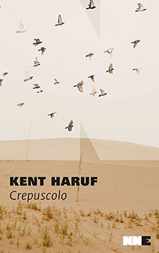
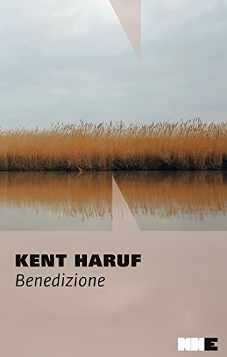

Canto della pianura
Canto della pianura - Siamo ad Holt, Colorado. Tom Guthrie, insegnante di storia al liceo locale, vive con i suoi due figli, Ike e Bobby in una fattoria. Sua moglie Ella soffre di depressione e sta pensando di lasciarlo. Victoria Robideaux, studentessa sedicenne nel liceo di Holt dove insegna Tom, scopre di essere incinta e viene cacciata di casa dalla madre alcolizzata e rancorosa per essere stata a sua volta abbandonata dal marito. Grazie all’aiuto di Maggie Jones, un’insegnante, Victoria viene accolta nella fattoria dei fratelli Mcpheron, Raymod e Harold, due cowboy di poche parole e grande dignità poco inclini ai rapporti umani e abituati a prendersi cura solo del loro bestiame.

Crepuscolo - Secondo volume della trilogia della pianura. Siamo di nuovo ad Holt, Colorado. Sono passati alcuni anni e Victoria Robideaux frequenta il college a Fort Collins. I fratelli Mcpheron si vedono riconsegnare le loro vite solitarie di una volta, scandite dalle stagioni, dalla cura degli animali e dalle telefonate settimanali di Victoria divenuta ormai una di casa. Vecchie e nuove conoscenze entrano a riempire il vuoto lasciato dalla ragazza. Tom Guthrie e i suoi figli prestano lavoro in fattoria per la marchiatura del bestiame e per la nascita di nuovi vitelli. DJ, un bambino orfano che vive col nonno e se ne prende cura come un adulto, troverà in Raymond Mcpheron un buon amico. Luther e Betty Wallace abitano in una roulotte scalcinata in Detroit Street insieme ai figli Joe Rae e Ritchie e sono costantemente seguiti dai servizi sociali. La figlia maggiore di Betty, Donna, è già stata data in affidamento e Rose Tyler, l’assistente sociale della contea, assiste impotente alla sfacelo della famiglia.

Benedizione - Dad Lewis è l’anziano protagonista di questo ultimo libro che compone la Trilogia della pianura. E’ molto malato e consapevole che questa sarà l’ultima estate che passerà con la moglie Mary e la figlia Lorraine, venuta a posta dalla città per assisterlo. Seduto in veranda trascorre i suoi ultimi mesi di vita in compagnia delle sue vicine di casa. Le Johnson, madre e figlia tornate da poco a vivere insieme. Berta May anziana signora che si prende cura della nipotina Alice rimasta orfana. Il reverendo Lyle assegnato alla comunità di Holt dopo essere stato allontanato da Denver per le sue omelie pacifiste. Dad fa un bilancio della sua vita, mentre il suo sguardo si perde verso la campagna amata. Uomo dall’onestà inflessibile, titolare di una ferramenta in Main Street, benvoluto e stimato dalla comunità, Dad ripercorre gli anni passati in cerca di pace ma a tornargli in mente sono soprattutto le scelte sbagliate fatte a causa del suo rigore caratteriale. Il commesso licenziato in tronco sospettato di aver rubato piccole somme e soprattutto l’allontanamento da casa di suo figlio Frank colpevole di essere omosessuale.
La prima cosa che consiglierei a chi si accinge a leggere la Trilogia della pianura di Kent Haruf è di farlo con delicatezza, in punta di piedi. Nello stesso modo in cui l’autore entra nella vita degli abitanti di Holt, cittadina immaginaria del Colorado, spazzata da venti freddi e coperta da ghiaccio in inverno, grigia e secca in estate.
I suoi abitanti sono perlopiù persone semplici allevatori, contadini. Conducono una vita monotona, fatta di azioni ripetute fino allo sfinimento. Sono abituati alle asprezze della vita, a volte rassegnati sempre pieni di dignità.
Viene subito da pensare che Haruf conosca bene questa vita. E’ figlio di un pastore di Pueblo, Colorado.
I tre romanzi ricalcano probabilmente il suo vissuto personale. Lo rivelano la chiarezza e la sincerità con le quali si snoda il racconto. E’ forte ed evidente l’attaccamento alla terra e alle proprie origini rurali tanto che l’autore lo trasmette anche ai suoi protagonisti.
Le storie di Haruf sono tutte molto semplici da raccontare ma molto più difficili da elaborare.
La scrittura nuda, affilata, schietta e senza fronzoli rispecchia fedelmente il carattere degli abitanti di Holt, uomini e donne onesti ma di poche parole, capaci, al bisogno, di gesti di grande umanità.
Forse è proprio questo l’ingrediente segreto che ci fa amare questo autore e la sua splendida trilogia. Ringrazio la sorte di averli messi sulla mia strada.
L'AUTORE - Kent Haruf apprezzato scrittore americano nasce a Pueblo, Colorado il 24 febbraio 1943. Figlio di un pastore metodista si laurea nel 1965 alla Università del Nebraska. Prima di diventare scrittore svolge i lavori più disparati. Tutti i suoi romanzi sono ambientati nellà città immaginaria di Holt, nella parte occidentale del Colorado e modellata sull’autentica città di Yuma, uno dei luoghi in cui l’autore ha vissuto. Vive con la con la moglie Mary e le tre figlie a Salida, Colorado dove muore il 30 novembre 2014.